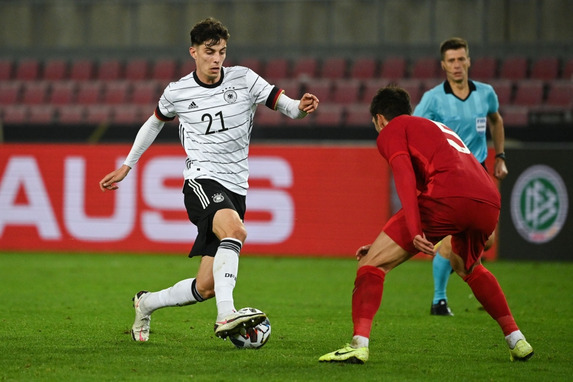

KAI HAVERTZ
KAI HAVERTZเจ้าของส่วนสูง 189 เซนติเมตร มาพร้อมความรวดเร็วและเทคนิคอันยอดเยี่ยม เขาลงเล่นตำแหน่งหลักเป็นกองกลางตัวรุก มีการจ่ายบอลที่แม่นยำและทะลุทะลวง พร้อมกับความสามารถในการครองบอลในพื้นที่แคบ ๆ และแย่งบอลคืนจากพื้นที่ส่วนบนของสนาม นอกจากนี้ ฮาแวร์ตซ์ ยังสามารถเล่นทางกราบข้าง หรือเป็นกองหน้าตัวกลางได้ด้วย เขาถูกยกย่องให้เป็น ‘Alleskonner’ ในประเทศบ้านเกิด ซึ่งมีความหมายว่าผู้เล่นที่สามารถทำได้ทุกอย่าง
เขาลงตัวจริง 9 จาก 10 เกมแรกของเราในทุกรายการ และมีผลงานการออกสตาร์ตที่สดใสกับสิงห์บลูส์ สิ่งดังกล่าวรวมถึงบทบาทในการคว้าชัยชนะรายการแชมเปียนส์ ลีกของเราในนัดบุกเยือนคราสโนดาร์ แต่ไฮไลต์ที่เด่นที่สุดเกิดขึ้นในคาราบาว คัพ ณ สนามสแตมฟอร์ดบริดจ์ เมื่อเขาทำแฮตทริกแรกในอาชีพค้าแข้ง ซึ่งเป็นการลงเล่นเพียงนัดที่สามกับเชลซีเท่านั้น โดยช่วยให้พวกเราไล่ถล่มบาร์นสลี่ย์ไป 6-0

นักเตะวัย 22 ปีมีอิทธิพลอย่างมากกับฟอร์มอันยอดเยี่ยมของทีมในพื้นที่สุดท้าย ระหว่างการแข่งขันแชมเปี้ยนส์ ลีก รอบรองชนะเลิศ นัดที่สอง ซึ่งพวกเราเอาชนะเรอัล มาดริด และในรอบชิงชนะเลิศ เขายิ่งโดดเด่นเข้าไปใหญ่ เมื่อโชว์ความนิ่ง พาบอลหนีผู้รักษาประตู และซัดเข้าไปนิ่ม ๆ กลายเป็นประตูโทนช่วยให้เชลซีคว้าแชมป์ยุโรปได้อีกหนึ่งสมัยที่ปอร์โต้
เขาเคยสวมปลอกแขนกัปตันทีมชาติเยอรมนีรุ่นอายุไม่เกิน 19 ปี มาแล้ว เช่นเดียวกับการประเดิมลงเล่นให้ทีมชาติเยอรมนีชุดใหญ่โดยได้ลงสนามแทนที่ของแวร์เนอร์ ในเกมนัดอุ่นเครื่องกับทีมชาติเปรู เมื่อเดือนกันยายน 2018 ก่อนจะทำประตูแรกในทีมชุดใหญ่ เกมที่เยอรมนีเสมออาร์เจนติน่า 2-2 ในช่วงเกือบ 1 ปีหลังได้เดบิวต์
เขามีชื่อติดทีมชาติเยอรมนีสำหรับการแข่งขันยูโร 2020 และยิงได้ 2 ลูกในเกมรอบแบ่งกลุ่มกับโปรตุเกสและฮังการี พวกเขาตกรอบจากรายการดังกล่าวด้วยน้ำมือของทีมชาติอังกฤษที่เวมบลีย์ในรอบ 16 ทีมสุดท้าย แต่ ฮาแวร์ตซ์ ยังได้โอกาสแสดงให้เห็นถึงความเหนือชั้นอีกครั้งหนึ่ง
SOCIAL MEDIA
 |
|